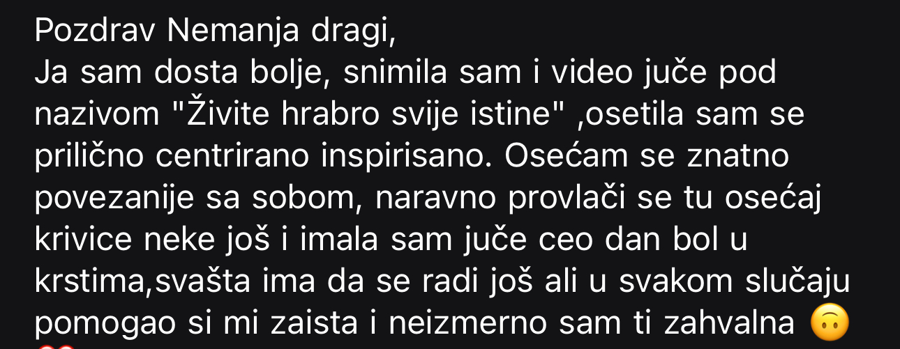
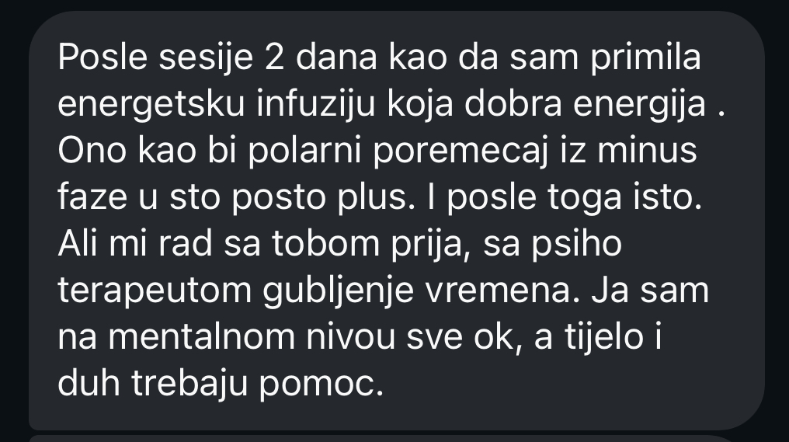
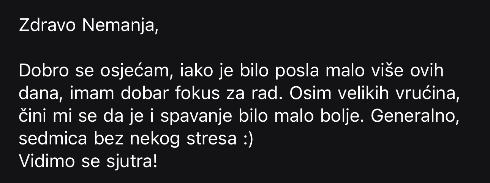
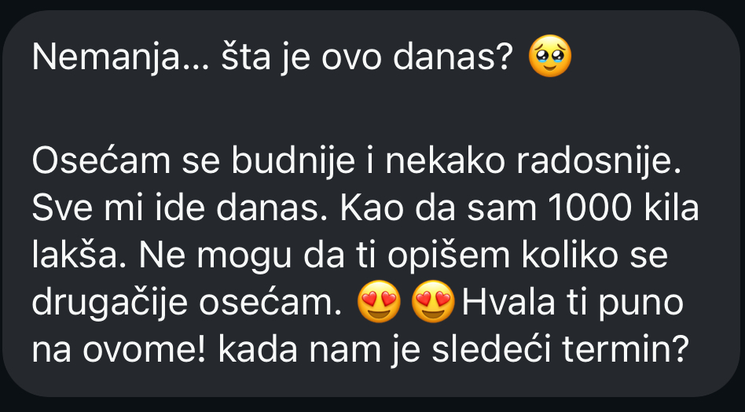
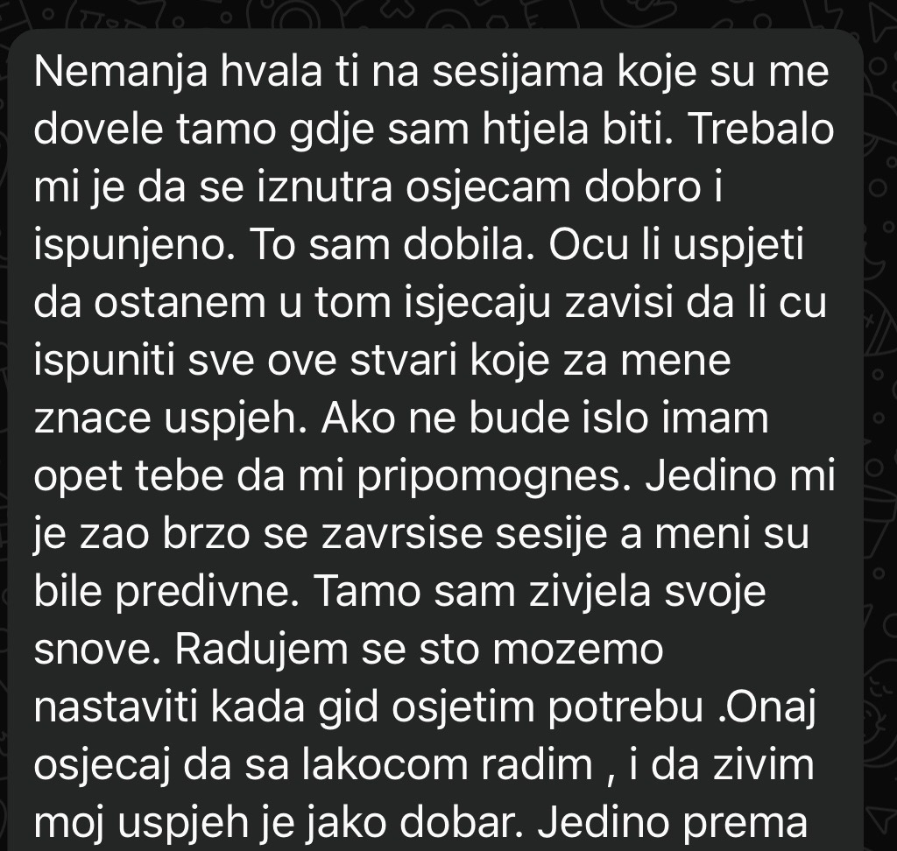

<title>Sve znaš. A i dalje reaguješ isto.</title>
<style>
:root {
  --bg:      #0D0A07;
  --s1:      #1A1410;
  --s2:      #231E18;
  --fog:     #F5F1EC;
  --sand:    #E8DDD0;
  --clay:    #C4A882;
  --warm:    #D4B896;
  --bark:    #3D2E1E;
  --stone:   #8A8070;
  --accent:  #9B6B3A;
  --deep:    #1E1712;
  --text:    #E8DDD0;
  --muted:   rgba(232,221,208,0.6);
  --subtle:  rgba(232,221,208,0.35);
}

* { margin:0; padding:0; box-sizing:border-box; }
html { scroll-behavior:smooth; }
body {
  background: var(--bg);
  color: var(--text);
  font-family: 'DM Sans', sans-serif;
  font-weight: 300;
  overflow-x: hidden;
}

/* FONTS */
@import url('https://fonts.googleapis.com/css2?family=Cormorant+Garamond:ital,wght@0,300;0,400;0,500;1,300;1,400;1,500&family=DM+Sans:wght@300;400;500&display=swap');

/* GLOBAL */
.label {
  font-size: 10px;
  letter-spacing: 5px;
  text-transform: uppercase;
  color: var(--clay);
  margin-bottom: 28px;
  display: block;
}

.serif { font-family: 'Cormorant Garamond', serif; }

/* ── NAV ── */
nav {
  position: fixed;
  top: 0; left: 0; right: 0;
  z-index: 100;
  padding: 20px 60px;
  display: flex;
  justify-content: space-between;
  align-items: center;
  background: rgba(10,8,5,0.85);
  backdrop-filter: blur(12px);
  border-bottom: 1px solid rgba(196,168,130,0.12);
  transition: background 0.4s, padding 0.4s;
}
nav.scrolled {
  background: rgba(26,18,8,0.95);
  padding: 14px 60px;
  border-bottom: 1px solid rgba(196,168,130,0.2);
}
.nav-logo {
  font-family: 'Cormorant Garamond', serif;
  font-size: 22px;
  font-weight: 400;
  color: var(--fog);
  text-decoration: none;
  letter-spacing: 1px;
  transition: color 0.3s;
}
.nav-logo:hover { color: var(--clay); }
.nav-links {
  display: flex;
  gap: 36px;
  list-style: none;
}
.nav-links a {
  font-size: 12px;
  letter-spacing: 2px;
  text-transform: uppercase;
  color: rgba(245,241,236,0.8);
  text-decoration: none;
  transition: color 0.3s;
}
.nav-links a:hover { color: var(--clay); }
.nav-cta {
  color: var(--clay) !important;
  border: 1px solid rgba(196,168,130,0.5);
  padding: 8px 20px;
  transition: all 0.3s !important;
}
.nav-cta:hover {
  background: var(--clay) !important;
  color: var(--deep) !important;
}
@media (max-width: 900px) {
  nav { padding: 16px 24px; }
  .nav-links { display: none; }
}

/* ── HERO ── */
.hero {
  min-height: 100vh;
  display: flex;
  flex-direction: column;
  justify-content: center;
  padding: 120px 60px 100px;
  position: relative;
  overflow: hidden;
}

.hero::before {
  content: '';
  position: absolute;
  inset: 0;
  background:
    radial-gradient(ellipse at 20% 50%, rgba(196,168,130,0.07) 0%, transparent 55%),
    radial-gradient(ellipse at 85% 20%, rgba(155,107,58,0.05) 0%, transparent 45%);
  pointer-events: none;
}

.hero-inner {
  max-width: 860px;
  position: relative;
  z-index: 1;
}

.hero-date {
  font-size: 11px;
  letter-spacing: 4px;
  text-transform: uppercase;
  color: var(--clay);
  margin-bottom: 48px;
  display: flex;
  align-items: center;
  gap: 16px;
}

.hero-date::before {
  content: '';
  display: block;
  width: 32px;
  height: 1px;
  background: var(--clay);
}

.hero h1 {
  font-family: 'Cormorant Garamond', serif;
  font-size: clamp(52px, 8vw, 108px);
  font-weight: 300;
  line-height: 1.0;
  color: var(--sand);
  margin-bottom: 0;
}

.hero h1 .line { display: block; }
.hero h1 .line-q {
  font-style: italic;
  color: var(--clay);
}

.hero-divider {
  width: 60px;
  height: 1px;
  background: rgba(196,168,130,0.3);
  margin: 48px 0;
}

.hero-sub {
  font-size: clamp(16px, 1.8vw, 19px);
  line-height: 1.85;
  color: var(--muted);
  max-width: 540px;
  margin-bottom: 56px;
}

.hero-sub em {
  font-style: italic;
  color: var(--sand);
  font-family: 'Cormorant Garamond', serif;
  font-size: 1.1em;
}

.btn-main {
  display: inline-block;
  padding: 18px 48px;
  background: var(--clay);
  color: var(--deep);
  font-size: 12px;
  letter-spacing: 2.5px;
  text-transform: uppercase;
  font-weight: 500;
  text-decoration: none;
  transition: background 0.3s, transform 0.2s;
  font-family: 'DM Sans', sans-serif;
}

.btn-main:hover { background: var(--warm); transform: translateY(-2px); }

.hero-note {
  margin-top: 20px;
  font-size: 12px;
  color: var(--subtle);
  letter-spacing: 0.5px;
}

.hero-note strong { color: var(--clay); font-weight: 400; }

.hero-scroll {
  position: absolute;
  bottom: 48px;
  right: 60px;
  writing-mode: vertical-rl;
  font-size: 9px;
  letter-spacing: 4px;
  text-transform: uppercase;
  color: var(--subtle);
}
@media (max-width: 900px) {
  .hero-scroll { display: none; }
}

/* ── RECOGNITION ── */
.recognition {
  background: var(--fog);
  padding: 120px 60px;
}

.recognition-inner { max-width: 900px; margin: 0 auto; }

.recognition .label { color: var(--accent); }

.recognition-intro {
  font-family: 'Cormorant Garamond', serif;
  font-size: clamp(28px, 3.5vw, 42px);
  font-weight: 300;
  line-height: 1.3;
  color: var(--bark);
  margin-bottom: 16px;
}

.recognition-body {
  font-size: 16px;
  line-height: 1.9;
  color: var(--stone);
  max-width: 620px;
  margin-bottom: 64px;
}

.quotes {
  display: flex;
  flex-direction: column;
}

.quote-item {
  padding: 28px 0;
  border-top: 1px solid rgba(61,46,30,0.1);
  display: flex;
  gap: 24px;
  align-items: flex-start;
}

.quote-item:last-child { border-bottom: 1px solid rgba(61,46,30,0.1); }

.q-mark {
  font-family: 'Cormorant Garamond', serif;
  font-size: 48px;
  font-weight: 300;
  color: var(--clay);
  line-height: 1;
  flex-shrink: 0;
  opacity: 0.5;
  margin-top: -4px;
}

.q-text {
  font-family: 'Cormorant Garamond', serif;
  font-size: clamp(18px, 2.2vw, 24px);
  font-weight: 300;
  font-style: italic;
  color: var(--bark);
  line-height: 1.5;
}

.recognition-close {
  margin-top: 56px;
  font-size: 16px;
  line-height: 1.9;
  color: var(--stone);
}

.recognition-close em {
  font-family: 'Cormorant Garamond', serif;
  font-style: italic;
  font-size: 1.1em;
  color: var(--bark);
}

/* ── WHY ── */
.why {
  background: var(--s1);
  padding: 120px 60px;
  position: relative;
  overflow: hidden;
}

.why::after {
  content: '';
  position: absolute;
  bottom: -100px; right: -100px;
  width: 500px; height: 500px;
  border-radius: 50%;
  background: radial-gradient(circle, rgba(196,168,130,0.04) 0%, transparent 70%);
  pointer-events: none;
}

.why-inner { max-width: 780px; margin: 0 auto; }

.why h2 {
  font-family: 'Cormorant Garamond', serif;
  font-size: clamp(36px, 4.5vw, 56px);
  font-weight: 300;
  line-height: 1.15;
  color: var(--sand);
  margin-bottom: 48px;
}

.why h2 em { font-style: italic; color: var(--clay); }

.why p {
  font-size: 16px;
  line-height: 1.95;
  color: var(--muted);
  margin-bottom: 24px;
}

.why p strong {
  color: var(--sand);
  font-weight: 400;
}

.why-highlight {
  border-left: 2px solid var(--clay);
  padding: 24px 32px;
  margin: 40px 0;
  background: rgba(196,168,130,0.04);
}

.why-highlight p {
  font-family: 'Cormorant Garamond', serif;
  font-size: clamp(20px, 2.5vw, 26px);
  font-style: italic;
  color: var(--sand);
  margin: 0;
  line-height: 1.6;
}

/* ── WHAT HAPPENS ── */
.what {
  background: var(--fog);
  padding: 120px 60px;
}

.what-inner { max-width: 1000px; margin: 0 auto; }

.what-header {
  display: grid;
  grid-template-columns: 1fr 1fr;
  gap: 80px;
  margin-bottom: 80px;
  align-items: end;
}

.what h2 {
  font-family: 'Cormorant Garamond', serif;
  font-size: clamp(36px, 4.5vw, 56px);
  font-weight: 300;
  line-height: 1.15;
  color: var(--bark);
}

.what h2 em { font-style: italic; color: var(--accent); }

.what-meta {
  font-size: 14px;
  line-height: 1.9;
  color: var(--stone);
}

.what-meta strong {
  display: block;
  font-family: 'Cormorant Garamond', serif;
  font-size: 22px;
  font-weight: 300;
  color: var(--bark);
  margin-bottom: 8px;
}

.what-grid {
  display: grid;
  grid-template-columns: 1fr 1fr;
  gap: 2px;
}

.what-item {
  background: var(--sand);
  padding: 40px 36px;
}

.what-num {
  font-family: 'Cormorant Garamond', serif;
  font-size: 64px;
  font-weight: 300;
  color: var(--clay);
  opacity: 0.2;
  line-height: 1;
  margin-bottom: 16px;
}

.what-item h4 {
  font-family: 'Cormorant Garamond', serif;
  font-size: 22px;
  font-weight: 400;
  color: var(--bark);
  margin-bottom: 12px;
}

.what-item p {
  font-size: 14px;
  line-height: 1.85;
  color: var(--stone);
}

/* ── TAKE HOME ── */
.takehome {
  background: var(--s2);
  padding: 120px 60px;
}

.takehome-inner {
  max-width: 900px;
  margin: 0 auto;
  display: grid;
  grid-template-columns: 1fr 1fr;
  gap: 2px;
  margin-top: 64px;
}

.take-header {
  max-width: 900px;
  margin: 0 auto 0;
}

.take-header h2 {
  font-family: 'Cormorant Garamond', serif;
  font-size: clamp(36px, 4.5vw, 56px);
  font-weight: 300;
  color: var(--sand);
  line-height: 1.15;
  margin-bottom: 16px;
}

.take-header h2 em { font-style: italic; color: var(--clay); }

.take-card {
  background: rgba(255,255,255,0.03);
  border-top: 2px solid rgba(196,168,130,0.2);
  padding: 36px 32px;
  transition: border-color 0.3s;
}

.take-card:hover { border-color: var(--clay); }

.take-card p {
  font-size: 15px;
  line-height: 1.85;
  color: var(--muted);
}

.take-card p em {
  font-family: 'Cormorant Garamond', serif;
  font-style: italic;
  font-size: 1.1em;
  color: var(--sand);
  display: block;
  margin-bottom: 8px;
  font-size: 18px;
}

/* ── FOR WHO ── */
.forwho {
  background: var(--fog);
  padding: 120px 60px;
}

.forwho-inner { max-width: 900px; margin: 0 auto; }

.forwho h2 {
  font-family: 'Cormorant Garamond', serif;
  font-size: clamp(36px, 4.5vw, 52px);
  font-weight: 300;
  color: var(--bark);
  line-height: 1.15;
  margin-bottom: 56px;
}

.forwho h2 em { font-style: italic; color: var(--accent); }

.recog-quotes {
  display: flex;
  flex-direction: column;
  margin-bottom: 40px;
}

.recog-q {
  padding: 22px 0;
  border-bottom: 1px solid rgba(61,46,30,0.1);
  font-family: 'Cormorant Garamond', serif;
  font-size: clamp(17px, 2vw, 21px);
  font-style: italic;
  color: var(--bark);
  line-height: 1.5;
  display: flex;
  gap: 20px;
  align-items: flex-start;
}

.recog-q:first-child { border-top: 1px solid rgba(61,46,30,0.1); }

.recog-q::before {
  content: '"';
  font-size: 32px;
  color: var(--clay);
  opacity: 0.6;
  flex-shrink: 0;
  line-height: 1;
  margin-top: -2px;
}

.forwho-close {
  font-size: 16px;
  line-height: 1.9;
  color: var(--stone);
  margin-bottom: 64px;
}

.forwho-close em {
  font-family: 'Cormorant Garamond', serif;
  font-style: italic;
  color: var(--bark);
  font-size: 1.1em;
}

/* FOR */
.foryes li::before { content: '✓'; color: var(--accent); opacity: 1; }

/* NOT FOR */
.notfor {
  background: rgba(61,46,30,0.06);
  border: 1px solid rgba(61,46,30,0.1);
  padding: 40px 48px;
  margin-top: 0;
}

.notfor h3 {
  font-family: 'Cormorant Garamond', serif;
  font-size: 24px;
  font-weight: 400;
  color: var(--bark);
  margin-bottom: 24px;
}

.notfor ul { list-style: none; }

.notfor li {
  font-size: 15px;
  color: var(--stone);
  padding: 10px 0;
  border-bottom: 1px solid rgba(61,46,30,0.08);
  display: flex;
  gap: 14px;
  align-items: flex-start;
  line-height: 1.6;
}

.notfor li:last-child { border-bottom: none; }

.notfor li::before {
  content: '×';
  color: var(--stone);
  flex-shrink: 0;
  opacity: 0.5;
}

.notfor-close {
  margin-top: 24px;
  font-size: 14px;
  color: var(--stone);
  font-style: italic;
  font-family: 'Cormorant Garamond', serif;
  font-size: 17px;
  line-height: 1.6;
  color: var(--bark);
}

/* ── SMALL GROUP ── */
.smallgroup {
  background: var(--bark);
  padding: 100px 60px;
  text-align: center;
  position: relative;
  overflow: hidden;
}

.smallgroup::before {
  content: '12';
  position: absolute;
  font-family: 'Cormorant Garamond', serif;
  font-size: 400px;
  font-weight: 300;
  color: rgba(196,168,130,0.04);
  top: 50%;
  left: 50%;
  transform: translate(-50%, -50%);
  line-height: 1;
  pointer-events: none;
}

.smallgroup-inner { max-width: 680px; margin: 0 auto; position: relative; z-index: 1; }

.smallgroup h2 {
  font-family: 'Cormorant Garamond', serif;
  font-size: clamp(36px, 5vw, 64px);
  font-weight: 300;
  color: var(--sand);
  line-height: 1.1;
  margin-bottom: 32px;
}

.smallgroup h2 em { font-style: italic; color: var(--clay); }

.smallgroup p {
  font-size: 16px;
  line-height: 1.9;
  color: rgba(232,221,208,0.6);
  margin-bottom: 16px;
}

.smallgroup-spots {
  margin-top: 48px;
  display: inline-flex;
  align-items: center;
  gap: 16px;
  border: 1px solid rgba(196,168,130,0.2);
  padding: 16px 32px;
}

.spots-num {
  font-family: 'Cormorant Garamond', serif;
  font-size: 48px;
  font-weight: 300;
  color: var(--clay);
  line-height: 1;
}

.spots-label {
  font-size: 11px;
  letter-spacing: 2px;
  text-transform: uppercase;
  color: var(--stone);
  text-align: left;
  line-height: 1.4;
}

/* ── PRICE ── */
.price {
  background: var(--bg);
  padding: 120px 60px;
  text-align: center;
  position: relative;
}

.price-inner { max-width: 600px; margin: 0 auto; }

.price h2 {
  font-family: 'Cormorant Garamond', serif;
  font-size: clamp(28px, 3vw, 40px);
  font-weight: 300;
  color: var(--sand);
  margin-bottom: 64px;
  line-height: 1.2;
}

.price h2 em { font-style: italic; color: var(--clay); }

.price-cards {
  display: grid;
  grid-template-columns: 1fr 1fr;
  gap: 2px;
  margin-bottom: 48px;
}

.price-card {
  background: var(--s2);
  padding: 40px 32px;
  text-align: left;
}

.price-card.featured { background: var(--s1); border-top: 2px solid var(--clay); }

.price-tag {
  font-size: 10px;
  letter-spacing: 3px;
  text-transform: uppercase;
  color: var(--stone);
  margin-bottom: 16px;
  display: block;
}

.price-card.featured .price-tag { color: var(--clay); }

.price-amount {
  font-family: 'Cormorant Garamond', serif;
  font-size: 64px;
  font-weight: 300;
  color: var(--muted);
  line-height: 1;
  margin-bottom: 8px;
  display: block;
}

.price-card.featured .price-amount { color: var(--clay); }

.price-until {
  font-size: 12px;
  color: var(--subtle);
  letter-spacing: 0.5px;
}

.price-card.featured .price-until { color: var(--muted); }

.price-cta { margin-bottom: 20px; }

.price-note {
  font-size: 12px;
  color: var(--subtle);
  letter-spacing: 0.5px;
}

/* ── FAQ ── */
.faq {
  background: var(--s1);
  padding: 100px 60px;
}

.faq-inner { max-width: 760px; margin: 0 auto; }

.faq h2 {
  font-family: 'Cormorant Garamond', serif;
  font-size: clamp(28px, 3vw, 40px);
  font-weight: 300;
  color: var(--sand);
  margin-bottom: 56px;
  line-height: 1.2;
}

.faq h2 em { font-style: italic; color: var(--clay); }

.faq-item { border-bottom: 1px solid rgba(196,168,130,0.1); }
.faq-item:first-of-type { border-top: 1px solid rgba(196,168,130,0.1); }

.faq-btn {
  width: 100%;
  background: none;
  border: none;
  cursor: pointer;
  padding: 26px 0;
  display: flex;
  justify-content: space-between;
  align-items: center;
  gap: 24px;
  text-align: left;
}

.faq-btn-q {
  font-size: 15px;
  font-weight: 400;
  color: var(--sand);
  line-height: 1.4;
}

.faq-icon {
  width: 20px;
  height: 20px;
  flex-shrink: 0;
  position: relative;
}

.faq-icon::before, .faq-icon::after {
  content: '';
  position: absolute;
  background: var(--clay);
  border-radius: 1px;
  transition: transform 0.3s, opacity 0.3s;
}

.faq-icon::before { width: 12px; height: 1.5px; top: 50%; left: 50%; transform: translate(-50%, -50%); }
.faq-icon::after  { width: 1.5px; height: 12px; top: 50%; left: 50%; transform: translate(-50%, -50%); }

.faq-item.open .faq-icon::after { transform: translate(-50%, -50%) rotate(90deg); opacity: 0; }

.faq-answer { overflow: hidden; max-height: 0; transition: max-height 0.4s ease; }
.faq-answer-inner {
  padding: 0 0 26px;
  font-size: 14px;
  line-height: 1.9;
  color: var(--muted);
}

/* ── TESTIMONIALS ── */
.testimonials {
  background: var(--s2);
  padding: 100px 60px;
  overflow: hidden;
}
.testimonials-inner { max-width: 900px; margin: 0 auto; }
.testimonials-title {
  font-family: 'Cormorant Garamond', serif;
  font-size: clamp(28px, 3.5vw, 44px);
  font-weight: 300;
  color: var(--sand);
  line-height: 1.15;
  margin-bottom: 48px;
}
.testimonials-title em { font-style: italic; color: var(--clay); }
.testimonials-track-wrap {
  overflow: hidden;
  width: 100%;
  border-radius: 2px;
}
.testimonials-track {
  display: flex;
  transition: transform 0.4s ease;
}
.testimonial-img {
  flex-shrink: 0;
  width: 100%;
  height: auto;
  object-fit: contain;
  border-radius: 2px;
  background: #111;
}
.testimonials-nav {
  display: flex;
  gap: 12px;
  margin-top: 32px;
}
.t-btn {
  background: none;
  border: 1px solid rgba(196,168,130,0.3);
  color: var(--clay);
  width: 44px;
  height: 44px;
  font-size: 18px;
  cursor: pointer;
  transition: all 0.3s;
  display: flex;
  align-items: center;
  justify-content: center;
}
.t-btn:hover { background: var(--clay); color: var(--deep); border-color: var(--clay); }
@media (max-width: 900px) {
  .testimonials { padding: 80px 24px; }
  .testimonial-img { width: 220px; }
}

/* ── FOOTER ── */
.footer {
  background: var(--bg);
  padding: 48px 60px;
  border-top: 1px solid rgba(196,168,130,0.08);
  display: flex;
  justify-content: space-between;
  align-items: center;
}

.footer-brand {
  font-family: 'Cormorant Garamond', serif;
  font-size: 22px;
  font-weight: 300;
  color: var(--muted);
  letter-spacing: 1px;
}

.footer-copy {
  font-size: 11px;
  color: var(--subtle);
  letter-spacing: 1px;
}

/* ── ANIMATIONS ── */
@keyframes fadeUp {
  from { opacity: 0; transform: translateY(20px); }
  to   { opacity: 1; transform: translateY(0); }
}

.hero-inner > * {
  animation: fadeUp 0.9s ease both;
}

.hero-date    { animation-delay: 0.1s; }
.hero h1      { animation-delay: 0.3s; }
.hero-divider { animation-delay: 0.5s; }
.hero-sub     { animation-delay: 0.55s; }
.hero-cta     { animation-delay: 0.65s; }

/* ── RESPONSIVE ── */
@media (max-width: 900px) {
  .hero, .recognition, .why, .what, .takehome, .forwho, .smallgroup, .price, .faq { padding: 80px 24px; }
  .what-header { grid-template-columns: 1fr; gap: 32px; margin-bottom: 48px; }
  .what-grid { grid-template-columns: 1fr; }
  .takehome-inner { grid-template-columns: 1fr; margin-top: 48px; }
  .price-cards { grid-template-columns: 1fr; }
  .footer { flex-direction: column; gap: 16px; text-align: center; padding: 40px 24px; }
  .notfor { padding: 32px 24px; }
  .smallgroup::before { font-size: 200px; }
}
</style>

<link rel="preconnect" href="https://fonts.googleapis.com">
<link href="https://fonts.googleapis.com/css2?family=Cormorant+Garamond:ital,wght@0,300;0,400;0,500;1,300;1,400;1,500&family=DM+Sans:wght@300;400;500&display=swap" rel="stylesheet">

<nav id="nav">
  <a href="index.html" class="nav-logo">Nemanja Vukoje</a>
  <ul class="nav-links">
    <li><a href="index.html#about">O meni</a></li>
    <li><a href="raspored.html">Kalendar</a></li>
    <li><a href="akal.html">Akal zajednica</a></li>
    <li><a href="individual.html">Individualni rad</a></li>
    <li><a href="mailto:info@vukojenemanja.com?subject=Prijava%20za%20radionicu%2023.%20septembra&body=Zdravo%20Nemanja%2C%0A%0AZelim%20da%20se%20prijavim%20za%20radionicu%2023.%20septembra.%0A%0AMoje%20ime%20je%3A%0A%0APozdrav" class="nav-cta">Rezerviši mesto</a></li>
  </ul>
</nav>

<!-- HERO -->
<section class="hero">
  <div class="hero-inner">
    <div class="hero-date">Online radionica · Sreda, 23. septembra u 20:00</div>
    <h1>
      <span class="line">Sve znaš.</span>
      <span class="line">A i dalje reaguješ isto.</span>
      <span class="line line-q">Zašto?</span>
    </h1>
    <div class="hero-divider"></div>
    <p class="hero-sub">
      Znanje može da promeni način na koji razumeš sebe. Ali samo razumevanje ne menja automatski obrazac po kome tvoje telo <em>godinama funkcioniše.</em>
    </p>
    <div class="hero-cta">
      <a href="mailto:info@vukojenemanja.com?subject=Prijava%20za%20radionicu%2023.%20septembra&body=Zdravo%20Nemanja%2C%0A%0AZelim%20da%20se%20prijavim%20za%20radionicu%2023.%20septembra.%0A%0AMoje%20ime%20je%3A%0A%0APozdrav" class="btn-main">Želim da napravim taj korak</a>
      <p class="hero-note">Early bird <strong>55 €</strong> do 17. septembra. Nakon toga 66 €.</p>
    </div>
  </div>
  <div class="hero-scroll">Scroll</div>
</section>

<!-- PREPOZNAJEŠ SE -->
<section class="recognition">
  <div class="recognition-inner">
    <span class="label">Prepoznaješ se?</span>
    <p class="recognition-intro">Probala si razne tehnike.<br>A tvoje ponašanje se i dalje vraća na isto.</p>
    <p class="recognition-body">Meditacije, afirmacije, journaling, kurseve, radionice. Nešto od toga ti je pomoglo, osećala si se bolje, jasnije, lakše. I onda te neko naljuti, a stomak ti se stisne, i stare reakcije se opet javljaju. Ili opet odložiš taj razgovor koji mora da se desi. Ili opet staneš taman pred korakom koji si već planirala sto puta.</p>

    <div class="quotes">
      <div class="quote-item">
        <span class="q-mark">"</span>
        <span class="q-text">Znam da treba da uradim, ali i dalje ne uspevam da uradim ono što znam da je dobro za mene.</span>
      </div>
      <div class="quote-item">
        <span class="q-mark">"</span>
        <span class="q-text">Znam šta želim, ali kao da nešto u meni stalno koči sledeći korak.</span>
      </div>
      <div class="quote-item">
        <span class="q-mark">"</span>
        <span class="q-text">Shvatam moj život i kako funkcionišem, ali se iste situacije vraćaju.</span>
      </div>
      <div class="quote-item">
        <span class="q-mark">"</span>
        <span class="q-text">Umorna sam od toga da sebi stalno objašnjavam zašto nešto radim.</span>
      </div>
      <div class="quote-item">
        <span class="q-mark">"</span>
        <span class="q-text">Želim da se nešto zaista pomeri, ali me grize savest žašto to ne radim.</span>
      </div>
    </div>
  </div>  
</section>

<!-- ZAŠTO -->
<section class="why">
  <div class="why-inner">
    <span class="label" style="color:var(--clay);">Zašto znanje nije dovoljno</span>
    <h2>Promena nije samo<br><em>u glavi.</em></h2>
    <p>Možeš da razumeš svoj obrazac, a da ga i dalje automatski ponavljaš.</p>
    <p>Zato što u trenutku okidača ne reaguješ samo iz onoga što znaš. <strong>Reaguješ i iz onoga što je tvoje telo naučilo.</strong></p>

    <div class="why-highlight">
      <p>Novi uvid može da promeni ono što razumeš. Novo iskustvo može da promeni način na koji reaguješ.</p>
      <p style="margin-top:20px;font-size:clamp(15px,1.8vw,19px);opacity:0.7;">Zato ćemo na radionici spojiti razumevanje, rad sa telom i konkretan korak.</p>
    </div>
  </div>
</section>

<!-- ŠTA SE DEŠAVA -->
<section class="what">
  <div class="what-inner">
    <div class="what-header">
      <div>
        <span class="label" style="color:var(--accent);">Šta se dešava na radionici</span>
        <h2>Dva sata.<br><em>Dvanaest učesnika.</em><br>Uživo, online.</h2>
      </div>
      <div class="what-meta">
        <strong>Sreda, 23. septembra u 20:00</strong>
        Radionica traje dva sata. Sve što ti treba je Zoom, internet konekcija i malo prostora i mira kod kuće.
      </div>
    </div>

    <div class="what-grid">
      <div class="what-item">
        <div class="what-num">01</div>
        <h4>Identifikujemo</h4>
        <p>Šta se dešava? Gde zapinje? Koji obrazac se ponavlja? Razumećeš situaciju gde si i zašto sve što znaš nije dovelo do promene koju tražiš.</p>
      </div>
      <div class="what-item">
        <div class="what-num">02</div>
        <h4>Pomeramo</h4>
        <p>Kroz meditaciju i rad sa telom izlaziš iz automatske reakcije i praviš prostor za drugačiji odgovor.</p>
      </div>
      <div class="what-item">
        <div class="what-num">03</div>
        <h4>Primenjujemo</h4>
        <p>Live coaching i jedan konkretan korak koji primenjuješ odmah. Jedna ili dve učesnice rade sa mnom uživo - ostale posmatraju i prepoznaju sebe, jer su obrasci slični čak i kada su situacije različite.</p>
      </div>
    </div>
  </div>
</section>

<!-- ŠTA ODNOSIŠ -->
<section class="takehome">
  <div class="take-header">
    <span class="label" style="color:var(--clay);">Šta odnosiš</span>
    <h2>Odlaziš sa<br><em>konkretnom akcijom.</em></h2>
  </div>
  <div class="takehome-inner">
    <div class="take-card">
      <p><em>Barem jedan konkretan korak</em>Definisan uz vođstvo, prilagođen tačno tvojoj situaciji. Ne nešto što "generalno pomaže", nego korak koji je tvoj.</p>
    </div>
    <div class="take-card">
      <p><em>Jasnoća oko jedne stvari</em>Koja te drži zaglavljenom, vidjena iz drugog ugla. Onu vrstu jasnoće koja se oseća, a ne samo razume.</p>
    </div>
    <div class="take-card">
      <p><em>Meditacija za podršku</em>Koju možeš da koristiš i posle radionice, kada te stegne stari obrazac.</p>
    </div>
    <div class="take-card">
      <p><em>Prostor za drugačiji izbor</em>Kada napraviš prostor između automatske reakcije i svog odgovora, sledeći korak može postati jasniji i realniji. To je ono što odnosiš.</p>
    </div>
  </div>
</section>

<!-- ZA KOGA -->
<section class="forwho">
  <div class="forwho-inner">
    <span class="label" style="color:var(--accent);">Ova radionica je za tebe ako...</span>
    <h2>Se prepoznaješ<br><em>u nečemu od ovoga:</em></h2>

    <div class="notfor foryes" style="margin-bottom:40px;">
      <ul>
        <li>Treba da postavim granicu, ali kada dođe trenutak, opet popustim.</li>
        <li>Znam šta želim, ali kao da nešto u meni stalno koči sledeći korak.</li>
        <li>Razumem kako funkcionišem, ali se iste situacije vraćaju.</li>
        <li>Umorna sam od toga da sebi stalno objašnjavam zašto nešto radim.</li>
        <li>Želim da se nešto zaista pomeri i da stojim iza svoje odluke.</li>
      </ul>
      <p class="notfor-close">Ova radionica je za tebe ako si već umorna od toga da znaš šta bi trebalo da uradiš, a ipak ne uspevaš da uradiš ono što znaš da je dobro za tebe.</p>
    </div>

    <div class="notfor">
      <h3>Ovo nije radionica za tebe ako...</h3>
      <ul>
        <li>Tražiš brzu formulu koja će rešiti sve tvoje probleme.</li>
        <li>Nisi spremna da stvarno promeniš nešto.</li>
        <li>Misliš da je tvoj slučaj previše specifičan da bi nešto moglo da pomogne.</li>
        <li>Tražiš potvrdu da si u pravu, a ne promenu.</li>
      </ul>
      <p class="notfor-close">Ovo je prostor za iskustvo, istraživanje i barem jedan konkretan korak napred.</p>
    </div>
  </div>
</section>

<!-- UTISCI -->
<section class="testimonials">
  <div class="testimonials-inner">
    <span class="label" style="color:var(--clay);">Utisci</span>
    <h2 class="testimonials-title">Šta kažu oni koji su<br><em>već radili sa mnom.</em></h2>
    <div class="testimonials-track-wrap">
      <div class="testimonials-track">
        
        
        
        
        
      </div>
    </div>
    <div class="testimonials-nav">
      <button class="t-btn" id="tPrev" onclick="slideTestimonials(-1)">←</button>
      <button class="t-btn" id="tNext" onclick="slideTestimonials(1)">→</button>
    </div>
  </div>
</section>

<!-- MALA GRUPA -->
<section class="smallgroup">
  <div class="smallgroup-inner">
    <span class="label" style="color:var(--clay);display:block;text-align:center;">Mala grupa. Konkretan rad.</span>
    <h2>Namerno<br><em>ograničena.</em></h2>
    <p>Ne želim webinar sa puno ljudi koji samo slušaju. Želim malu grupu u kojoj ima prostora za prisutnost, pitanja, razmenu i live coaching.</p>
    <p>Zato broj mesta nije neograničen.</p>
    <div class="smallgroup-spots">
      <span class="spots-num">12</span>
      <span class="spots-label">mesta<br>ukupno</span>
    </div>
    <p style="margin-top:32px;font-size:13px;color:rgba(232,221,208,0.35);letter-spacing:0.5px;">Kada se popune, prijave se zatvaraju.</p>
  </div>
</section>

<!-- CENA -->
<section class="price">
  <div class="price-inner">
    <span class="label" style="display:block;text-align:center;">Rezerviši svoje mesto</span>
    <h2>Odaberi kada<br><em>se priključuješ.</em></h2>
    <div class="price-cards">
      <div class="price-card featured">
        <span class="price-tag">Early bird</span>
        <span class="price-amount">55€</span>
        <span class="price-until">Do 17. septembra</span>
      </div>
      <div class="price-card">
        <span class="price-tag">Redovna cena</span>
        <span class="price-amount">66€</span>
        <span class="price-until">18 - 23. septembra u 20:00</span>
      </div>
    </div>
    <div class="price-cta">
      <a href="mailto:info@vukojenemanja.com?subject=Prijava%20za%20radionicu%2023.%20septembra&body=Zdravo%20Nemanja%2C%0A%0AZelim%20da%20se%20prijavim%20za%20radionicu%2023.%20septembra.%0A%0AMoje%20ime%20je%3A%0A%0APozdrav" class="btn-main">Rezerviši mesto</a>
    </div>
    <p class="price-note" style="margin-bottom:12px;">Samo 12 mesta - radionica je interaktivna i uključuje live coaching.</p>
    <p class="price-note">Nakon prijave dobijaš instrukcije za plaćanje. Mesto je rezervisano kada uplata bude potvrđena.</p>
  </div>
</section>

<!-- FAQ -->
<section class="faq">
  <div class="faq-inner">
    <span class="label" style="color:var(--clay);">Pitanja i odgovori</span>
    <h2>Pre nego što<br><em>se priključiš.</em></h2>

    <div class="faq-item">
      <button class="faq-btn" onclick="toggleFaq(this)"><span class="faq-btn-q">Da li treba da imam iskustvo sa meditacijom ili energetskim radom?</span><span class="faq-icon"></span></button>
      <div class="faq-answer"><div class="faq-answer-inner">Ne. Radionica je prilagođena i onima koje nikada nisu meditirali. Sve što trebaš je otvorena glava i malo prostora i mira kod kuće.</div></div>
    </div>
    <div class="faq-item">
      <button class="faq-btn" onclick="toggleFaq(this)"><span class="faq-btn-q">Šta ako ne budem izabrana za live coaching?</span><span class="faq-icon"></span></button>
      <div class="faq-answer"><div class="faq-answer-inner">Live coaching je dobrovoljan. Ako ne želiš da radiš uživo, posmatraš i prepoznaješ sebe u onome što vidim - obrasci su nam često slični čak i kada su situacije različite. Radni list i meditacija su deo iskustva za sve učesnike, bez obzira da li rade uživo ili ne.</div></div>
    </div>
    <div class="faq-item">
      <button class="faq-btn" onclick="toggleFaq(this)"><span class="faq-btn-q">Da li će biti snimak radionice?</span><span class="faq-icon"></span></button>
      <div class="faq-answer"><div class="faq-answer-inner">Ne. Radionica je osmišljena kao živo iskustvo u grupi i neće biti snimana. Upravo ta ograničenost grupe i live format su ono što stvara prostor za pravu promenu.</div></div>
    </div>
    <div class="faq-item">
      <button class="faq-btn" onclick="toggleFaq(this)"><span class="faq-btn-q">Šta ako ne mogu da prisustvujem uživo?</span><span class="faq-icon"></span></button>
      <div class="faq-answer"><div class="faq-answer-inner">Ako znaš unapred da nećeš moći, ovo nije pravo vreme za tebe. Radionica je dizajnirana kao live iskustvo i rezultati dolaze iz prisutnosti u grupi.</div></div>
    </div>
    <div class="faq-item">
      <button class="faq-btn" onclick="toggleFaq(this)"><span class="faq-btn-q">Kako se plaća?</span><span class="faq-icon"></span></button>
      <div class="faq-answer"><div class="faq-answer-inner">Nakon prijave dobijaš instrukcije za plaćanje. Mesto je rezervisano kada uplata bude potvrđena.</div></div>
    </div>
    <div class="faq-item">
      <button class="faq-btn" onclick="toggleFaq(this)"><span class="faq-btn-q">Koliko mesta ima?</span><span class="faq-icon"></span></button>
      <div class="faq-answer"><div class="faq-answer-inner">Maksimalno 12. Kada se popune, lista se zatvara.</div></div>
    </div>
    <div class="faq-item">
      <button class="faq-btn" onclick="toggleFaq(this)"><span class="faq-btn-q">Šta dolazi posle radionice?</span><span class="faq-icon"></span></button>
      <div class="faq-answer"><div class="faq-answer-inner">Posle radionice možeš potpuno samostalno da nastaviš dalje. Ako osetiš da želiš dublju podršku i rad, možemo da razgovaramo o individualnom radu ili Akal zajednici. To je tvoj izbor i nema pritiska.</div></div>
    </div>
  </div>
</section>

<footer class="footer">
  <span class="footer-brand">Nemanja Vukoje</span>
  <span class="footer-copy">© 2026 · vukojenemanja.com</span>
</footer>

<script>
var tIndex = 0;
function slideTestimonials(dir) {
  var imgs = document.querySelectorAll('.testimonial-img');
  var max = imgs.length - 1;
  tIndex = Math.max(0, Math.min(tIndex + dir, max));
  var pct = tIndex * 100;
  document.querySelector('.testimonials-track').style.transform = 'translateX(-' + pct + '%)';
}

window.addEventListener('scroll', function() {
  document.getElementById('nav').classList.toggle('scrolled', window.scrollY > 50);
});

function toggleFaq(btn) {
  const item = btn.closest('.faq-item');
  const answer = item.querySelector('.faq-answer');
  const isOpen = item.classList.contains('open');
  document.querySelectorAll('.faq-item.open').forEach(function(el) {
    el.classList.remove('open');
    el.querySelector('.faq-answer').style.maxHeight = '0';
  });
  if (!isOpen) {
    item.classList.add('open');
    answer.style.maxHeight = answer.scrollHeight + 'px';
  }
}
</script>
